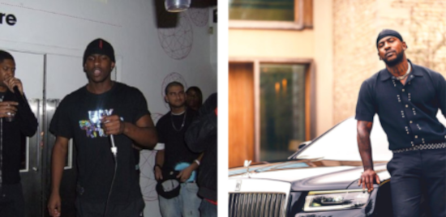

Joseph Junior Adenuga Jr., conhecido artisticamente como Skepta, é um MC, rapper, compositor, diretor e produtor musical britânico de grande influência na atual geração do RAP.
Joseph Júnior Adenuga mundialmente conhecido como Skepta nasceu em 1982 na cidade de Tottenham, o rapper é filho de pais nigerianos sendo ele o mais velho dos 3 outros irmãos Jamie, Julie e Jason. A história de Joseph na música não começa diretamente nos palcos ou por trás do microfone, o jovem artista inicia seus passos na música mixando as músicas do Meridian Crew e produzindo batidas já na época inconfundíveis, o grupo (do qual Jamie ou JME que é irmão de Joseph era integrante) colocava seu som para tocar em algumas rádios piratas do norte londrino e de maneira underground/independente foram conquistando espaço na cena. Em 2005 o grupo se desfez então Joseph e JME vão para a Roll Deep antes de em 2006 fundar a hoje icônica gravadora própria Boy Better Know (BBK) que já teve passagens de peso como a do canadense Drake em 2016, mas não vamos avançar a história porque ainda em 2016 Joseph estava começando a se tornar o Skepta que conhecemos. Falando de gênero musical sujo (de rua, sem a limpeza estética e as predileções da indústria musical) a Inglaterra é um dos terrenos mais férteis no mundo, creio que ao lado da Jamaica, Brasil e alguns países da África o incrível Reino Inglês nos proporcionou ao longo dos anos as melhores musicas rejeitadas pela indústria, basta olhar para a base do Grime pois temos como referencia o UK Garage, o Hip Hop certamente, o Jungle vindo dos anos 90 e ainda temos o Ragga (Dancehall) pra fechar essa composição suja, rua, sem censura ou alinhamento estético. Foi em 2006 que a cena descobriu que existia Grime além dos contornos de Londres e que na verdade era um espetáculo a parte, estamos falando da série Lord of the Mics (LOTM) que foi um evento desenvolvido pela BBK propondo batalhas entre as áreas da Inglaterra, é na segunda série que a cena conhece o incomparável Skepta num confronto com o talentosíssimo MC Devilman de Birmingham.
As batalhas na Inglaterra assim como no Brasil são um ponto chave para fomentar uma cena e apresentar novos artistas, é possível até estabelecer um antes e depois das batalhas mas isso é história pra outro dia porque depois dos duelos Skepta estava preparando algo que mudaria o rumo do Grime e do Rap no mundo, tô falando do álbum Greatest Hits de 2007.
O álbum de estreia do Skepta podia até não ser um dos mais esperados da cena mas depois de lançado se tornou praticamente um bíblia para o Grime, o jovem artista levou o ritmo sujo das ruas para um outro patamar de fato e o disco ainda hoje é usado como referencia pra qualquer um que ouse se aventurar nas barras agressivas do Grime.
Greatest Hits certamente abriu mais portas para Skepta e já na época o fez se autoconsiderar o Rei do Grime, mas ele não era o único que achava isso e pra quem discordava ele provou no ano seguinte (2008) porque merecia o titulo em um dos freestyle mais famosos do mundo que rolou na TimWestwood TV.
Para conferir a última colaboração de Skepta clique aqui!